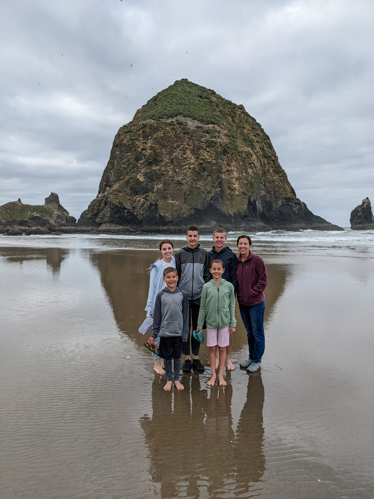
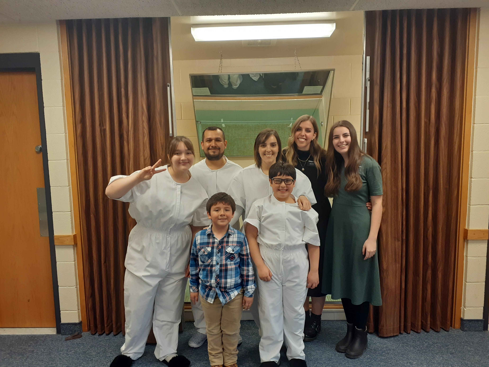

Morehead Anika
1589 W 500 S · Layton, UT 84041 · (801) 678-3159 ·
anikamorehead@gmail.com
Searched for and delivered requested items to faculty and students using a variety of databases. Mastered the layout and organization of the library to ensure the materials were delivered quickly and accurately to faculty and patrons.
Maintained high standards of customer service during high-volume, fast-paced operations. Communicated clearly and positively with coworkers and management. Operated drive-in and cash register. Followed safe food procedures to prepare burgers, fries, shakes, and cones. Cleaned and organized both workplace and eating areas.
Helped students to learn necessary skills using a variety of methods. Ensured they had the help and support they needed to suceed and feel confident.
GPA: 4.00
Outside of school and work I enjoy hiking, camping, backpacking, and any other adventure with family and friends.
I love going to knew places and learning about them.
I also enjoy reading, calligraphy, and baking.

